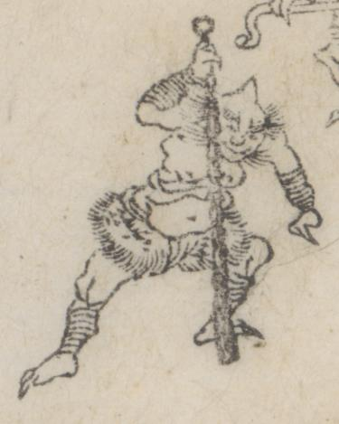

← 图鉴索引

金棒を持った鬼。毛皮をまいている。
著作者：蹄齋北馬／出典：親書誌：U426_nichibunken_0443：俊徳麻呂謡曲演義／日付：2017／資源識別子：U426_nichibunken_0443_0007_0001
Copyright (c)2010- International Research Center for Japanese Studies, Kyoto, Japan. All rights reserved.